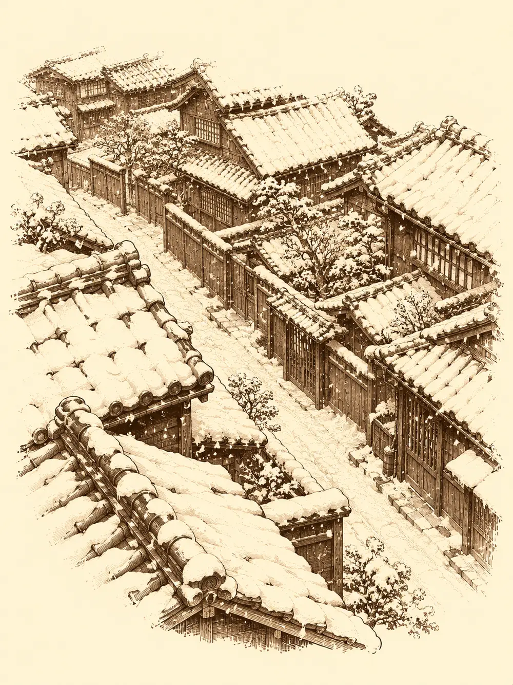

Capítulo 52
Nieve en verano
Libro IV · Los guardianes del Oeste y del Este
Mosto roncaba en la sala de la base de Ukio, medio borracho como siempre, y Shizuka se paseaba por delante de todos con una espada corta nueva al cinto y una armadura que le quedaba un poco grande y tenía un brillo que no era solo del metal. Se la había comprado con las quinientas monedas del torneo. Había quedado segunda, recordaba a quien quisiera oírla, y la bolsa del kamaitachi seguía intacta, porque esa era para su comida.
Los cazadores llevaban unos días en el pueblo. Habían visto el torneo desde las gradas y se habían quedado a descansar. Maroxi había ido mandando madera de la que talaba Gur a la aldea de pescadores que le estaba construyendo el barco, y en Sho había empezado a trabajar como ayudante del alquimista; llevaba encima un elixir de aquella tienda que le afilaba la mente como una piedra de amolar. Ikari había llenado cinco barriles de sake en la base y había encargado a alguien que buscara compradores. Jin seguía con sus papeles de jefe, aunque nadie le hacía mucho caso, y cuando podía cogía el pico y se iba a buscar alguna veta.
El enano, Yurei, había pasado por el burdel a cobrar su parte del casino: veintiuna monedas. Le habían dicho, de paso, que otras veces alguien ya había venido a cobrar en su nombre. Él no había ido en semanas.
"¿Qué pasó en el templo del Este?", preguntó Maroxi. "Yo no pude ir".
Jin le habló del agua, de los tiburones, del dragón, de los guantes que le había dado y que no le servían para nada, porque congelaban pero no hacían daño. Si al menos pudiera regalárselos a alguien. No podía: eran suyos y de nadie más.
Al subir las escaleras para salir oyeron jaleo en la calle. Al abrir la puerta les golpeó el frío.
Ukio estaba nevado. Los tejados, las calles, los huertos, todo blanco. Era agosto.
"¿Esto es normal en esta tierra?".
No lo era. Maroxi alzó la mano bajo los copos y notó en ellos un hormigueo de magia. Por la calle, algunas conocidas apartaban la nieve con palas, tan extrañadas como todos, y la mayoría de la gente que veían eran mujeres. Ikari fue a la taberna. Kitaro y unas vecinas le contaron que varios hombres habían visto algo, una presencia, y la habían seguido hacia el bosque. Mufasa, Romu, Bill y otros mercenarios habían salido detrás a buscarlos hacía horas. No había vuelto nadie.
Antes de salir pasaron por las tiendas. Maroxi intentó preparar una poción en la del alquimista del pueblo y no le salió nada; compró en cambio una para resistir el frío y se la bebió de un trago. Yurei y Maroxi fueron a ver a Madame Jone, que jugaba a la ruleta en su casino con un cigarro en la boca y no tenía ni idea de qué era aquella nieve. El enano le pidió un trato: una frase clave, para que en adelante su dinero del casino se lo entregaran solo a quien la dijera. Ella aceptó. Yurei le pagó además veinte monedas por una cena con Maroxi.
Maroxi, por su parte, se escabulló a un callejón, tomó la forma de Gur y volvió a entrar.
"He oído que tú pagas a los aventureros. Así que paga".
Jone lo miró, sacó una libreta y le entregó treinta monedas por cada cazador. El falso Gur salió muy deprisa, se encerró en el callejón y volvió a ser Maroxi.
Jin pasó por el puesto de Kimiko, donde se contrataban mercenarios. Le confirmó que habían salido varios grupos al bosque; les había ofrecido unas cincuenta monedas si descubrían de dónde venía aquello. Poco más sabía.
La última parada fue la tienda de Asami. Maroxi le dejó sobre el mostrador los huesos que había recogido en Sho, bajo el cerezo corrompido, y le enseñó lo que decía su libro sobre aquellos árboles que levantaban a los muertos.
"Si me los dejas aquí unos días, los miro", dijo ella, sin prometer nada. "Los que se fueron, salieron por el norte".
El bosque estaba helado. A medida que se adentraban, el frío se volvía más fuerte, tanto que la piel que quedaba al aire les ardía. Intentaron encender una llama con magia y el fuego salió débil, mustio, como si el aire de aquel lugar no lo dejara respirar. Después entraron en la ventisca. No se veía a más de unos pasos. Cada pisada se hundía en la nieve y costaba sacarla.
Al fondo distinguieron siluetas. Cuatro, cinco, de tamaño humano, inmóviles.
Eran Romu, Bill, Mufasa, varios vecinos de Ukio, congelados en la postura en que los había sorprendido el frío: uno andando, otro con el brazo extendido. Una capa de hielo los cubría por completo y no dejaba ver si tenían heridas. Alguien le tocó el cuello a uno para buscarle el pulso y el hielo le quemó los dedos. Probaron a deshacer la magia sobre Mufasa. El hielo brilló un instante y se quedó como estaba.
Maroxi abrió su libro de yokai y buscó. Encontró una leyenda: una mujer de hielo que atraía a la gente y la congelaba con solo acariciarla, dejándola así, inmóvil, por tiempo indefinido; cuando se cansaba de un lugar, se marchaba a otro. El libro no decía cómo deshacer lo que hacía. Ni cómo vencerla.
"Algo así me pasó una vez", murmuró Yurei. "Con una mujer".
No aseguró que fuera la misma.

Jin preparó una antorcha y le echó por encima un poco del carbón en polvo que había sacado de la mina, para que ardiera más fuerte. Aguantó encendida un poco más que una antorcha normal. Después la ventisca la apagó igual. Yurei mandó por delante a la pequeña fantasma que invocaba con una figura de madera, para que viera qué había más allá. La fantasma tardaba en volver.
Mientras los demás discutían, Maroxi se acercó al mago congelado. Mufasa llevaba su libro de conjuros a la cintura, atrapado en el hielo, y Maroxi intentó arrancárselo. Se le congelaron las yemas de los dedos. Escondió la mano.
"Me he rozado con el hielo al intentar ayudarlo, nada más".
Nadie le creyó del todo.
Avanzaron en la dirección donde el frío era más intenso. Entre la nieve vieron dos figuras: una sentada en una roca y otra inclinada sobre ella, como si la besara. Cuando se acercaron, la primera era ya otro aldeano, recién convertido en hielo. La segunda se enderezó.
Era una mujer toda blanca. Piel blanca, cabello blanco, un vestido de seda blanca que ondeaba en la tormenta. La ventisca giraba a su alrededor como si ella fuera el centro.
"Venid. Venid conmigo".
Yurei le dedicó un piropo que le resbaló como agua sobre piedra. La voz de la mujer cambió. Sonó profunda, sacada de un pozo, y se les heló hasta el borde de las orejas.
"He dicho que vengáis".
Cuanto más se acercaban, más les quemaba el frío en la piel. Jin cargó con la espada. La mujer de las nieves lo tocó con un dedo y Jin se quedó clavado en el sitio, sin poder mover las piernas. Dos lobos helados salieron de la ventisca a ambos lados de ella, con el pelaje hecho de escarcha.
Ikari paralizó a uno con un gesto y soltó a su perro de sombras. Yurei inspiraba a todos con su tambor, hizo invisible a Maroxi y les contaba relatos que les devolvían el valor. Maroxi agarró a Jin con una fuerza que no salía de sus manos, sino de su cabeza y lo sacó a rastras de donde estaba atrapado. El fuego no servía de mucho allí. Los ataques fallaban en la ventisca. La mujer y los lobos exhalaban un aliento helado que les cubría la ropa de carámbanos. Ikari, con su magia, tiró de ella hasta tenerla delante.
La mujer alzó las manos para invocar una tormenta de hielo. Maroxi, desde la invisibilidad, cortó el hechizo antes de que terminara de formarse. La mujer lo miró, sonrió y no dijo nada.
La pelea se alargó. Probaron a detenerla con un toque helado y ella ni se inmutó. Maroxi mató a uno de los lobos, que se deshizo en nieve sobre la nieve. Yurei sacó la daga que se ríe, la lanzó y la hoja se clavó en el otro lobo con una carcajada metálica. El lobo se fundió también. La daga se quedó en el suelo, riéndose sola.
La mujer de las nieves volvió a alzar las manos, y esta vez nadie la detuvo. Del cielo cayó una lluvia de hielo y piedras sobre Yurei y Maroxi. El enano quedó sepultado bajo los carámbanos, sin sentido.
Ikari dejó la botella. Fue la primera vez que lo vieron conjurar con las dos manos, en serio. La alcanzó con un toque de muerte y la mujer chilló.
"Tendríais que haber venido conmigo".
Su cuerpo se pudrió, se deshizo en el aire como un fantasma y desapareció. La ventisca cesó al instante. Se hizo un silencio en el que solo se oía, en algún lugar de la nieve, una daga que se reía.
Desenterraron a Yurei. Volvió en sí agotado, quejándose de que Maroxi le había metido la mano en el bolsillo mientras estaba inconsciente; Maroxi juró que buscaba una poción. El enano recuperó su daga.
La nieve se deshacía más deprisa de lo natural. Las figuras de hielo empezaron a gotear. Jin acercó la antorcha para ayudar y fue como querer deshelar un estanque con una vela. Al cabo de un buen rato a Mufasa se le vio la cara, y luego el resto.
"Ay, muchachos. ¿Qué ha pasado?".
"Os había atrapado un yokai".
"He visto una mujer hermosa. Me acarició la cara y perdí el conocimiento".
Los demás fueron volviendo también, mojados, temblando, vivos. Todos menos uno. Uno de los vecinos había muerto durante la lucha, y el deshielo no le devolvió nada.
Maroxi no perdió la ocasión. "Te hemos librado de esto. ¿Me dejas echarle un ojo a tu libro?".
Mufasa se lo enseñó. Rayo de frío, armadura de mago, escudo, bola de fuego. Y un conjuro para volverse borroso a los ojos del enemigo que Maroxi no tenía. A cambio le ofreció el suyo para cortar hechizos ajenos. El mago leonino aceptó, aunque aquello no se copiaba en dos minutos.
Volvieron a Ukio. La nieve desaparecía de los tejados, de las calles, y se quedaba en charcos. En las puertas, las mujeres salían a abrazar a sus maridos, a sus hijos, a sus hermanos, y algunas conocidas salieron a recibirlos.
"¿Dónde os habéis metido, que venís llenos de hielo?".
"Ponme una cerveza", pidió Jin.
Se fue a la taberna, quejándose del cansancio, con Ikari detrás, que era el menos herido. Mufasa siguió a Maroxi con su libro bajo el brazo. Yurei, en cambio, se metió por un callejón en dirección al casino, donde Madame Jone lo esperaba con su cigarro, y por todo el pueblo el agua corría hacia los desagües.